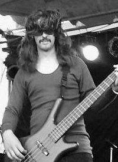

Rob
Rob was the first person to be hired by Jon K. back in the early days of Sabbra Cadabra. For personal reasons, Rob decided to move on and out of the area which led to his original replacement. Rob had always been key to the band (and not just because he had a van!) but with his calm tenacity, ensured that Geezer's bass lines were done justice to. Many times post-gigs was he approached by the audience to congratulate him on his spotless performance. It is therefore, a great pleasure to have Rob back in the fold for the Reunion gigs.